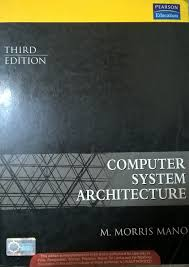
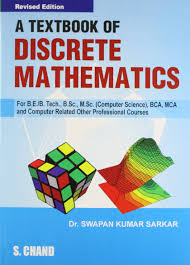
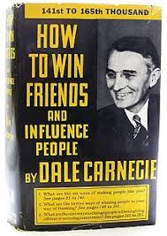

THEORY BOOKS:-
1.C PROGRAMMING LANGUAGE

I had studied c language during my B.sc but experience of learning C here in MANIT is awesome.The way Anirban sir is teaching is fab and
mind blowing.now i came to understand that i had skipped much in c language during B.sc,now Mr.Anirban sir is reason behind every concept
that's why i am getting it so nicely.
2. DATA STRUCTURE

I have learnt somewhat data structure earlier but only theory part and do not know how to implement it using any programming language.
But now i make littlebit programs regarding data structure and Mr.Amit bhagat sir is also helping us to learn this complex subject with an
ease.
3.COMPUTER ORGANIZATION AND ARCHITECTURE
This subject play an important role in understanding the architecture of our PC,this taught bt Mr.Anoop Tiwari sir briefly this also helps us in understanding working of Operating system.
4. OPERATING SYSTEM

I did not learn much about operating system in my B.sc but now i am learning it very carefully and mam is also doing hardwork along with students
mam's way of exlaning each concept is very nice and in very easy language so that every student easilly understand it.
5.DISCRETE MATHEMATICS
Almost everywher maths is very imp subject,i am quite good in maths.In my 1 sem there is some basic maths like group theory etc are there which were brilliantly taught by Mr.Manoj Jha sir.
6.BUSINESS COMMUNICATION
This also one of the important subject in our course.It teaches us how to manage interact among each other to reach organizational goals and and how should we behaves in our day to day life.